Making a Dataset
TouchEmotion: Touch Interaction Dataset for Emotion Classification
Dataset Description
This dataset contains touch interaction data collected from a capacitive touch sensor connected to an ESP32-based microcontroller. The dataset is designed for training AI models to classify human emotional states based on touch behaviour patterns.
Each sample represents a short interaction session and includes numerical features extracted from raw touch signals.
Data Format
Each record is stored as a row in a CSV file with the following structure:
| Column Name | Description |
|---|---|
| timestamp_ms | Time of recording in milliseconds |
| pressCount | Number of touch events |
| avgInterval | Average interval between touches (ms) |
| maxInterval | Maximum interval between touches (ms) |
| duration | Total interaction duration (ms) |
| label | Emotion label |
Example:
5004,4,123,186,384,anxious
10004,8,121,205,721,anxiousMotivation
This dataset was created for a university project exploring how human emotions can be inferred from touch interaction patterns. The goal is to support AI-based emotion classification in interactive media installations and affective computing systems.
The dataset aims to demonstrate how physical interaction data can be used as input for machine learning in creative and media-based applications.
Composition
The dataset consists of multiple CSV files, each containing multiple samples of touch interaction data.
Each sample includes:
- Timestamp
- Touch frequency
- Temporal intervals
- Interaction duration
- Emotion label
Emotion labels include:
- calm
- anxious
- excited
- sad
The dataset contains only numerical sensor data and does not include any personally identifiable information.
Collection Process
The data was collected using a capacitive touch sensor connected to a XIAO ESP32-S3 microcontroller. The device recorded touch signals and calculated statistical features for each interaction session.
The dataset was created through handcrafted data collection by the author. The author performed touch interactions while intentionally expressing different emotional states.
The data was stored locally on an SD card and later exported as CSV files.
Preprocessing
Raw sensor signals were processed into statistical features including press count, average interval, maximum interval, and duration.
No normalisation was applied in the raw dataset. Missing or invalid readings were manually removed.
TinyML Touch Sensor Interaction
1. Chosen Topic
Motion / Anomaly Detection
I chose motion and anomaly detection because touch interaction patterns can reflect different human behaviours and emotional states, which are suitable for lightweight machine learning on microcontrollers.
2. Three Real-World Situations
- Emotional interaction detection a touch sensor could recognise whether a user is calm or anxious based on how frequently and irregularly they touch the surface.
- Stress monitoring device a wearable device could detect abnormal touch patterns such as rapid tapping, which may indicate stress or nervousness.
- Interactive media installation an installation could respond differently when users touch gently versus aggressively, creating adaptive storytelling or visual effects.
3. Simple System Sketch
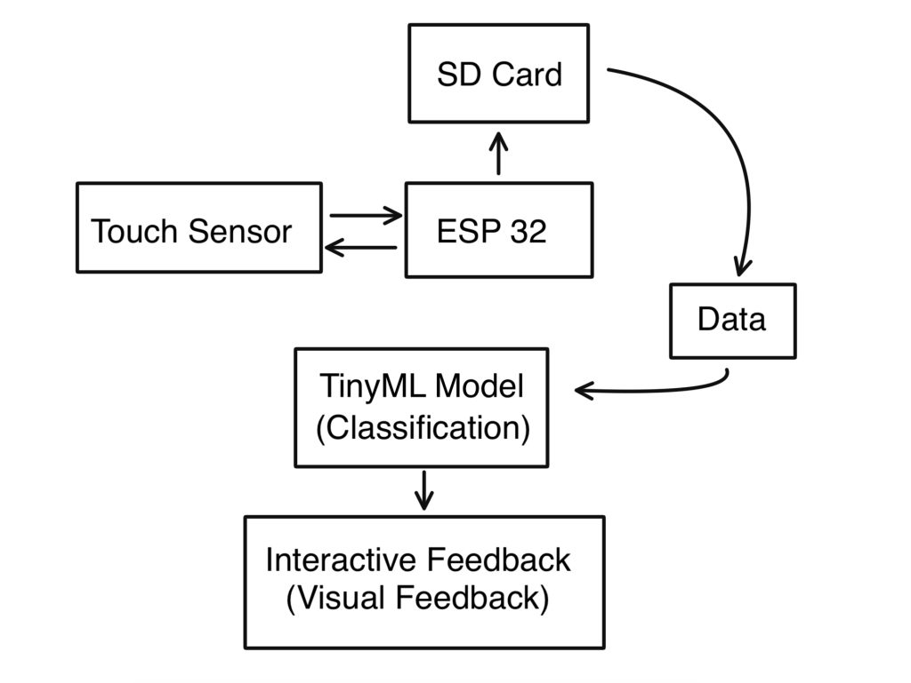
Explanation:
- Sensor: Capacitive touch sensor
- Data: Touch count, time intervals, duration
- Model: Classifies touch pattern (e.g. calm / anxious)
- Output: Triggers different feedback in an interactive system
4. Edge Impulse Exploration
I explored the Edge Impulse interface and became familiar with:
- Data Acquisition: uploading CSV sensor data
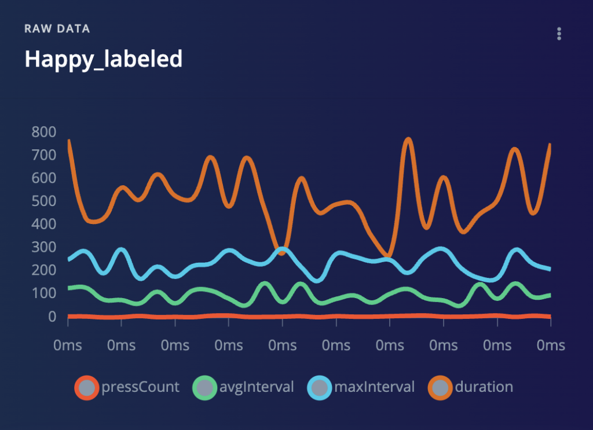
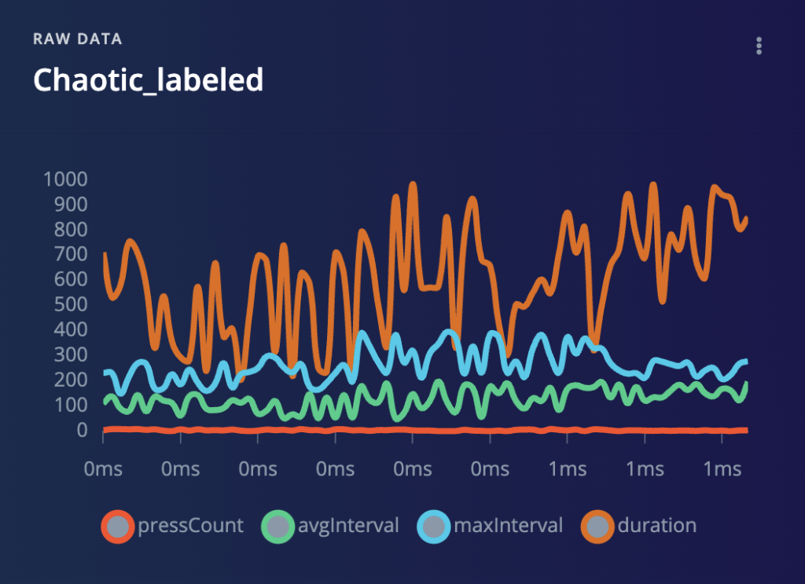
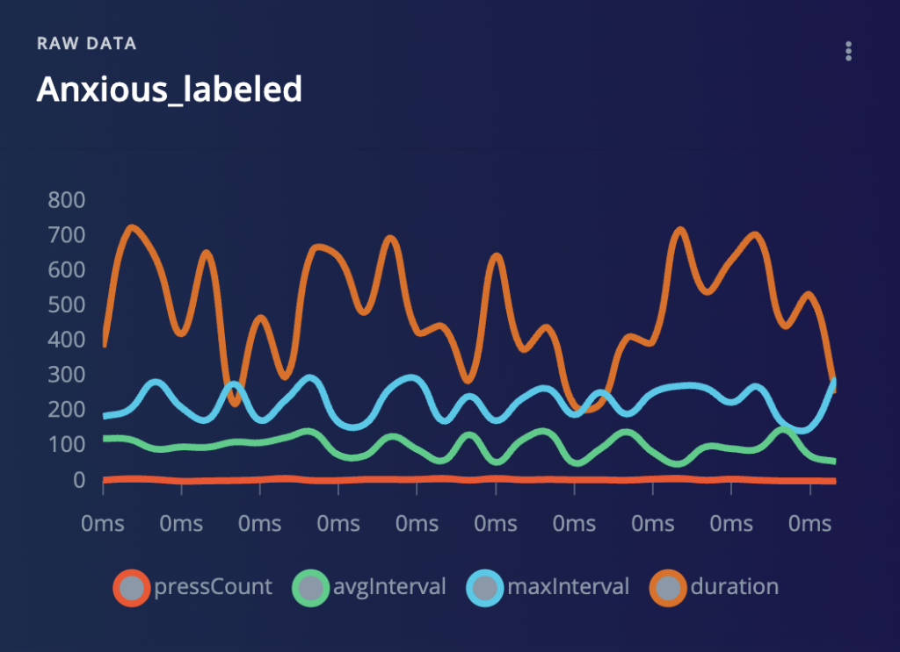
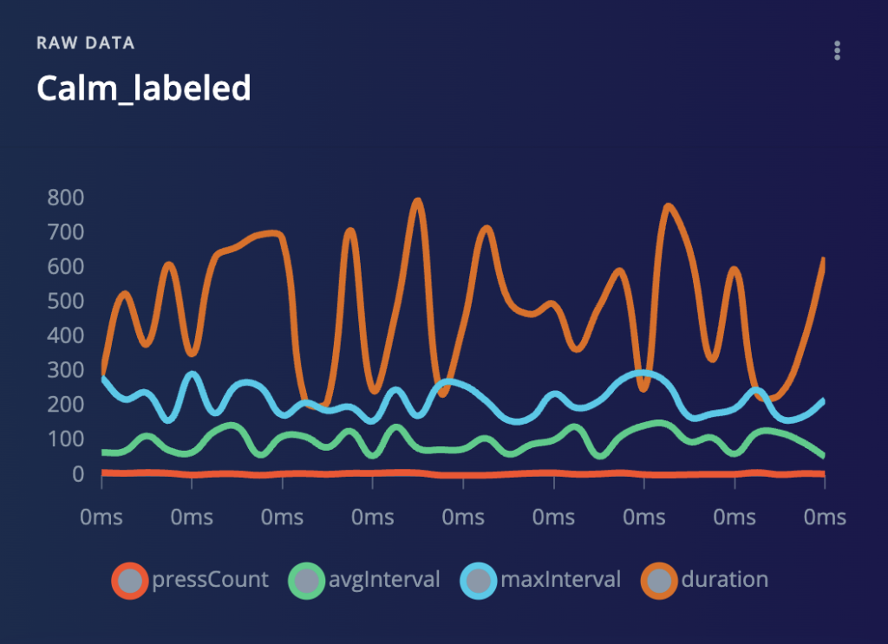
- Create Impulse: choosing input blocks and learning blocks
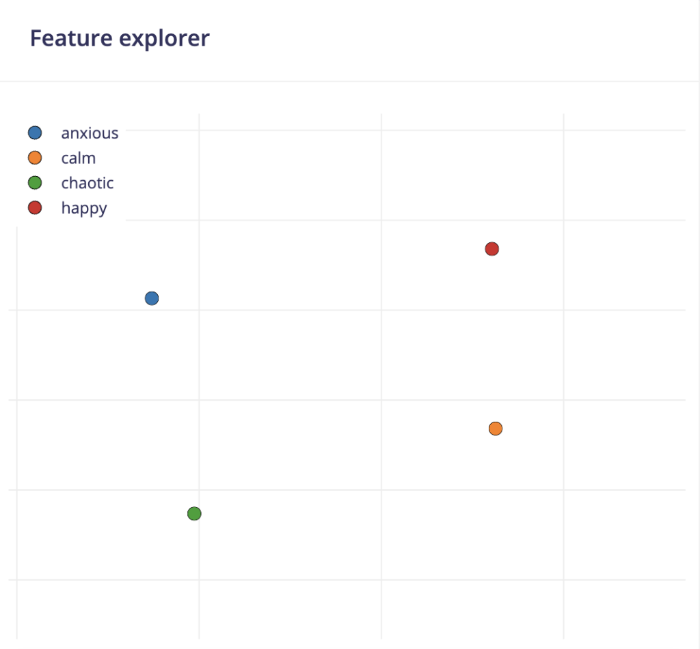
- Training: viewing feature extraction and training process
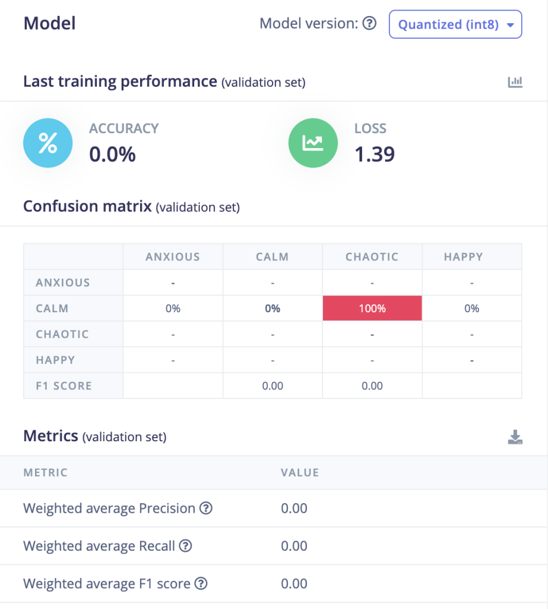
- Deployment: seeing how models can be exported to microcontrollers
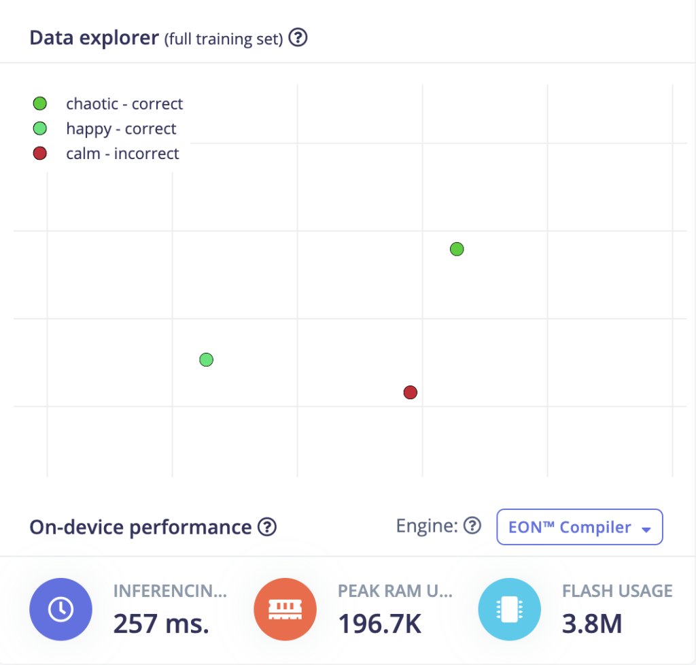
This helped me understand the full workflow of TinyML development.
5. Tiny Data Collection
I used the touch sensor dataset from Assignment 1.
The data includes:
- timestamp_ms
- pressCount
- avgInterval
- maxInterval
- duration
- label
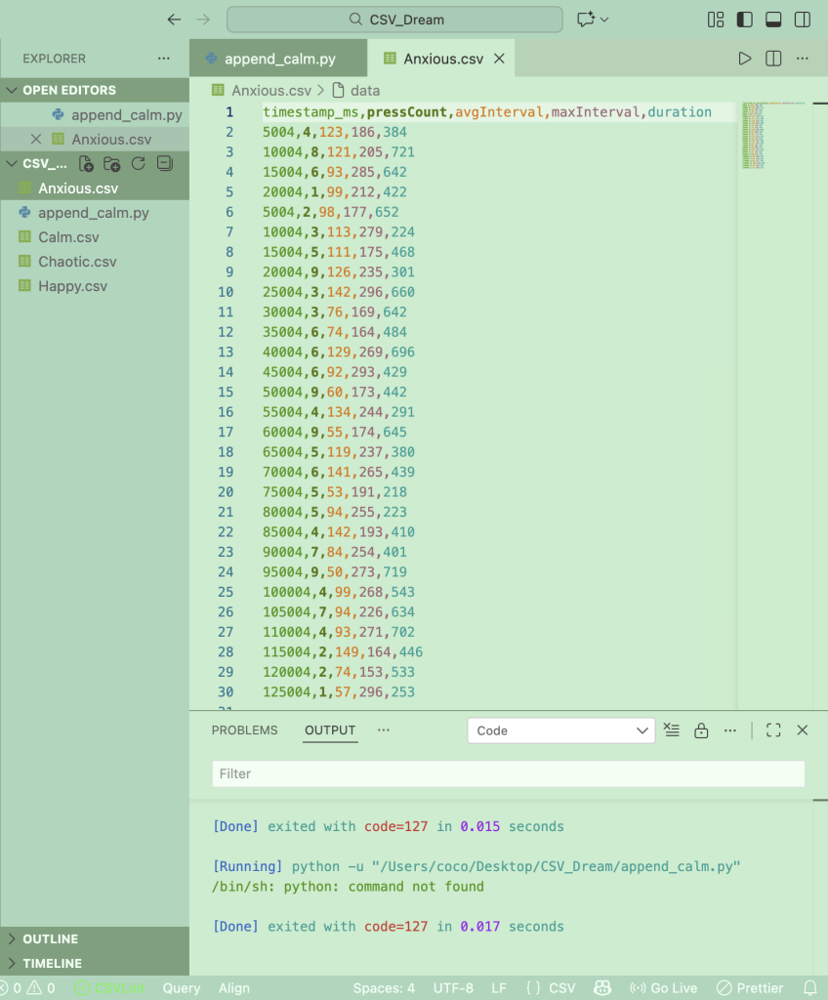
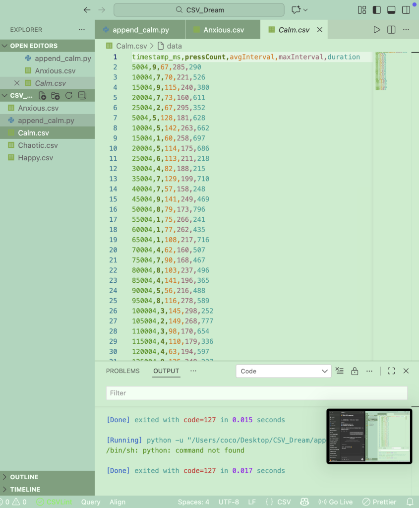
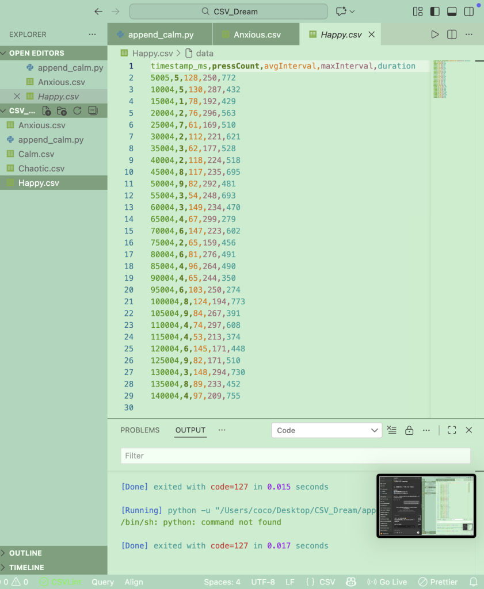
I uploaded a small number of samples into Edge Impulse to observe how the data is visualised inside the platform. I did not train a full model yet.
6. Short Reflection
Collecting data was more difficult than expected because human touch behaviour is not consistent. The same emotion can produce very different interaction patterns. On a small microcontroller, memory and processing power are limited, which means the model must stay very simple. Noise in sensor data can easily affect model accuracy. To improve the model, I would collect data from more users and increase the number of samples. I would also try to balance the dataset between different emotion categories. Feature selection is important to avoid overloading the TinyML model.